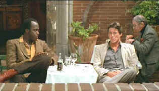

| American
Gigolo/B,B |
| Paramount/1980/ |
The slick filmmaking style echoes the thematic material
perfectly in Paul Schrader's direction debut American Gigolo.
The director also wrote the tight script. Schrader, whose script for
Taxi Driver looks at the dark side of
New York, captures the facile side of Los Angeles with
impeccable taste.
 |
| How
about some professional courtesy here. ©Paramount |
Julian Kay
is a self-assured male escort who works hard at maximizing his
client appeal. Kay is so good and in such demand that more than
one service wants his body. While on the prowl to maximize his
bank account, Julian is caught in a gig beyond his bedside
skills. Pimps and Madams use Julian, the cops are hot on his
tale and the only place he can turn is to a trick that never
was.
The camera work is simply seductive by
John Bailey. In the early stages of the film, when the camera
slowly closes on Julian Kay, it's positively sexual, examining
Kay the way one of the women who pay him might check him out
before opening their handbags. Later, as the tone of the film
changes, the similar camera work no longer conjures sexual
fantasies, but becomes thoroughly menacing. It's Schrader's way
of equating the darkness in both aspects of this movie, and it
works as a stunning pictorial style for American Gigolo.
Richard
Gere, lithe and oily, makes a perfect choice for Julian Kay.
Gere emanates low class with learned taste. The animal side of
the actor comes to the fore in most scenes, though a pathetic vulnerability,
not very convincing I might add, shows up in the late stages of
his performance. Lauren Hutton does fine work as
Kay's knight in flimsy clothing Michelle Stratton and Nina Van
Pallandt is ice cold as Julian's Madam mentor. Hector Elizondo
offers excellent off-beat support in the role of Detective
Sunday. He's really got a way with clothes.
There's lots of grain in the long shots
of American Gigolo and this anamorphic transfer from Paramount
does a good job of minimizing any choppiness in it. Colors are
bright and contrast is excellent. Several scenes are slightly
soft and there are a couple of errant scratches and dust showing
up on the screen elements. The Dolby Digital 5:1 surround sound
located most of the sound in the front channel speakers. Georgio
Moroder's "Euro-score" pounds at the proper places and
the dialogue is delivered with crisp detail.
|
|

Selections from the feature archive
include articles on
Akira Kurosawa, Frank
Darabont, Blonde
Bimbos, Hollywood
Street Gangs, or Vietnam:
The Hollywood Pariah, and many more...
A
Western is a Western is a Western

Place or time it's still a Western from
John Ford's Drums Along the Mohawk to John Sturges' Bad
Day at Black Rock.

The
Movie Poster Archive include extensive poster images from the
films of stars like Susan Hayward, Kirk Douglas, Katharine
Hepburn and many more. This month's featured star is
Humphrey
Bogart.

They may
be judgmental, but that's the point, isn't it. Lots of DVD reviews
plus news and more.
Click on the link to visit the judge's chambers.

The Digital Ring
has DVD reviews and theatrical release reviews as well. Check
out their DVD site of the month feature. Currently, they are
running an interview with DVD
Verdict's Sean McGinnis
|